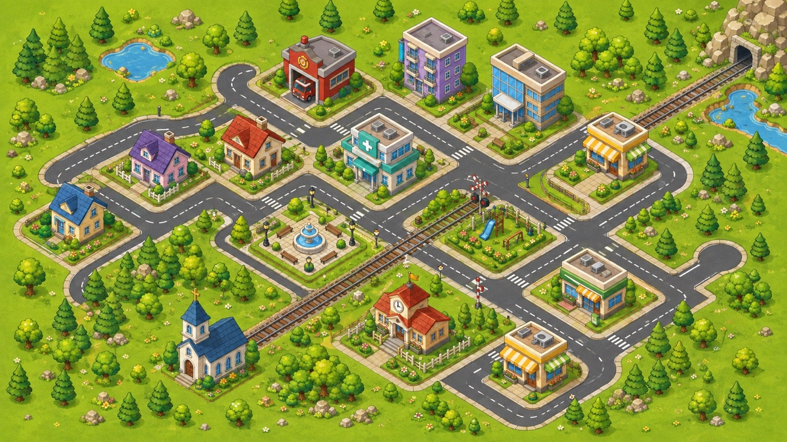

소비 도시 빌더
풀밭에서 시작 · 에셋 배치에 따라 지형·도로·진입로 재계산 · 좌우 반전
준비됨
↖ 선택 모드
⇆ 좌우 반전
⧉ 복제
⬆ 앞으로
⬇ 뒤로
⌫ 삭제
# 격자
▧ 참고 이미지
🏙 예시 배치
💾 저장
↻ 불러오기
⇩ JSON
⇧ JSON
초기화
모드:
선택
선택된 오브젝트 없음
자동 연결 0 · 진입로 0 · 변형 지형 1

빈 곳을 클릭해 배치 · 추가/이동/삭제 때 배경 지형과 연결망을 다시 계산